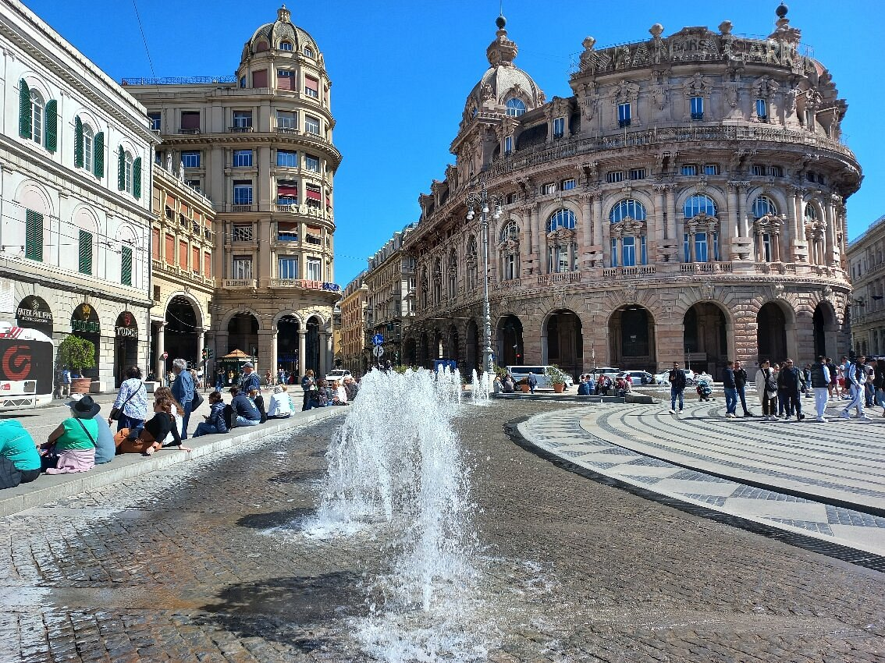

24.06.2004, місто Київ
Гімназія номер 172 "Нивки" міста Києва Зараз навчаюся в КПІ.
Хобі:
Улюблені фільми та книги:
Генуя - портове місто на півночі Італії, головне місто провінції Генуя та регіону Лігурія, на відстані близько 410 км на північний захід від Рима. Генуя розміщена на березі Генуезької затоки
